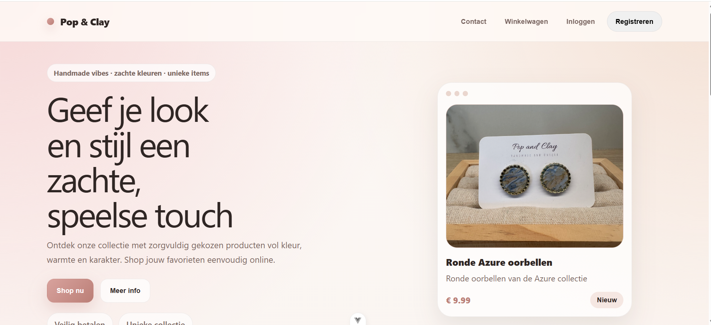
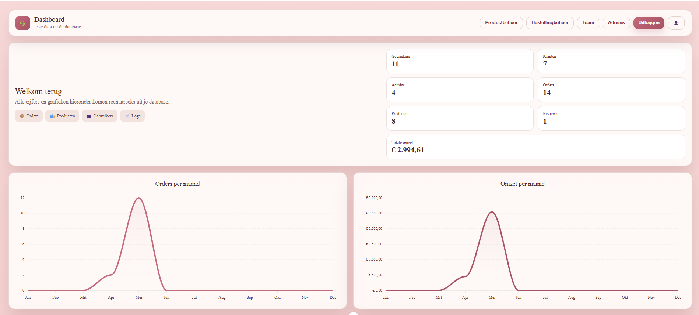
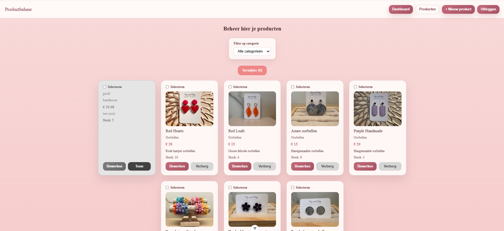
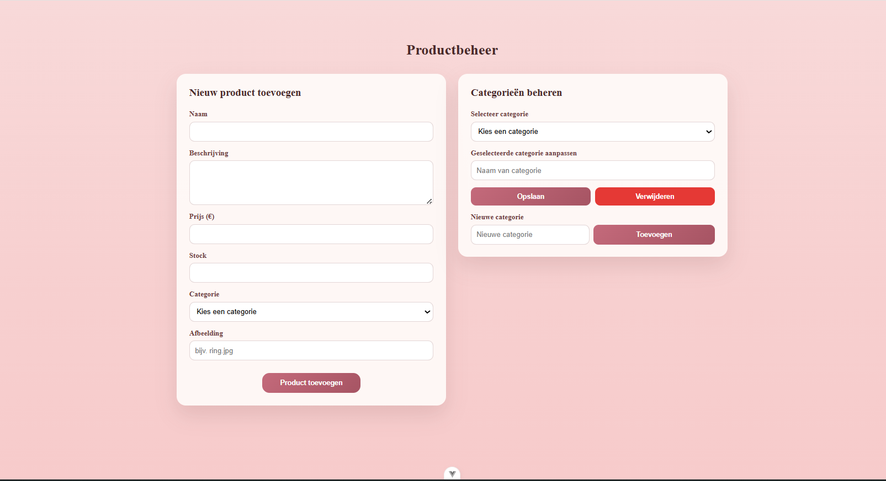
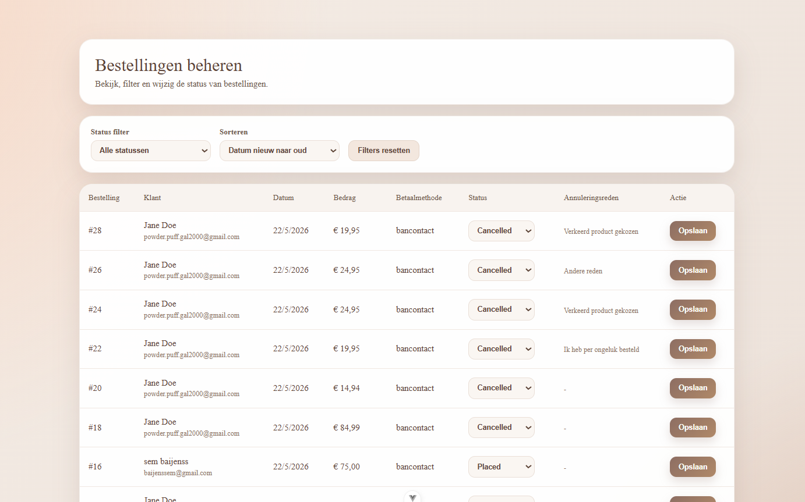

Andere projecten
Naast mijn hoofdproject werkte ik tijdens WPL2 ook aan kleinere opdrachten en oefeningen. Hierbij lag de focus vooral op programmeren, testen, debugging en het verbeteren van mijn portfolio.
Portfolio · Werkplekleren
Tijdens Werkplekleren 2 werkte ik aan full-stack development met .NET, Vue.js, SQL Server, JWT-authenticatie en professionele softwarearchitectuur.
Full-stack project
Een moderne webshop en beheersysteem ontwikkeld met .NET, Vue.js, SQL Server en JWT-authenticatie.





Ontwikkeling van krachtige REST API’s met C# .NET, Dapper en SQL Server.
Moderne gebruikersinterface ontwikkeld met Vue.js en responsive design.
Technische vaardigheden
JWT login, rollenbeheer en beveiligde API-endpoints voor gebruikers en administrators.
Winkelwagen, checkout, orderbeheer en dynamische productfunctionaliteiten.
Moderne interfaces met Vue.js, dashboards en responsive design.
Problemen analyseren, fouten opsporen en stap voor stap oplossen.
Vrije sectie
Naast mijn hoofdproject werkte ik tijdens WPL2 ook aan kleinere opdrachten en oefeningen. Hierbij lag de focus vooral op programmeren, testen, debugging en het verbeteren van mijn portfolio.
Tijdens WPL2 groeide ik vooral in C# .NET, Vue.js, SQL Server, Dapper, HTML, CSS en JavaScript. Ik leerde beter werken met API’s, databases, authenticatie en responsive webdesign.
In mijn vrije tijd ben ik graag bezig met technologie, websites bouwen en nieuwe dingen uitproberen. Die interesse helpt mij om gemotiveerd te blijven en mezelf verder te ontwikkelen als programmeur.
Reflectie
Tijdens Werkplekleren heb ik veel bijgeleerd op zowel technisch als persoonlijk vlak. In Werkplekleren 1 leerde ik de basis van programmeren en webontwikkeling met projecten zoals Wordle en mijn digitale cv. Tijdens Werkplekleren 2 bouwde ik verder op deze kennis en werkte ik aan een webshop en beheersysteem met technologieën zoals C# .NET, Vue.js, SQL Server en JWT-authenticatie. Hierdoor kreeg ik een beter beeld van hoe professionele softwareprojecten worden opgebouwd.
Wat ik het leukste vond tijdens Werkplekleren was het ontwikkelen van nieuwe functionaliteiten en het oplossen van technische problemen. Vooral het combineren van front-end en back-end vond ik interessant. Het gaf veel voldoening om een toepassing stap voor stap te zien groeien en steeds beter te maken. Ook het ontwerpen van gebruikersvriendelijke interfaces vond ik een leuke uitdaging.
Natuurlijk waren er ook minder leuke momenten. Vooral bugs, problemen met authenticatie en databaseverbindingen konden soms frustrerend zijn. Soms was het moeilijk om de oorzaak van een probleem te vinden en kostte het veel tijd om een oplossing uit te werken. Toch heb ik hierdoor geleerd om gestructureerder te werken en problemen stap voor stap aan te pakken.
Een belangrijk inzicht dat ik heb meegenomen, is dat softwareontwikkeling meer is dan alleen code schrijven. Een goede structuur, beveiliging, onderhoudbaarheid en gebruiksvriendelijkheid zijn minstens even belangrijk. Daarnaast heb ik geleerd om beter na te denken over hoe verschillende onderdelen van een applicatie samenwerken.
Mijn grootste succes tijdens Werkplekleren is de groei die ik heb doorgemaakt als programmeur. Ik ben zelfstandiger geworden, heb meer vertrouwen gekregen in mijn vaardigheden en durf grotere uitdagingen aan te gaan. Vooral het ontwikkelen van een volledige applicatie met verschillende technologieën maakt mij trots en motiveert mij om mij verder te blijven ontwikkelen binnen de IT-sector.
Tijdens Werkplekleren kwamen de verschillende onderdelen van de X-factor regelmatig terug. Het onderdeel (Em)passie zie ik vooral terug in mijn interesse voor programmeren en technologie. Ik vind het leuk om nieuwe dingen te leren en oplossingen te zoeken voor technische problemen. Tijdens projecten zoals de webshop en mijn portfolio heb ik vaak extra tijd gestoken in het verbeteren van functionaliteiten en het leren van nieuwe technieken.
Ondernemend en innovatief kwam naar voren doordat ik regelmatig zelfstandig op zoek ging naar oplossingen. Bij problemen met bijvoorbeeld authenticatie, databanken of API-koppelingen probeerde ik eerst zelf uit te zoeken hoe ik deze kon oplossen. Hierdoor leerde ik initiatief nemen en creatief nadenken.
Het onderdeel samen(leven)werken kwam vooral naar voren tijdens de samenwerking met medestudenten, lectoren en begeleiders. Door feedback te krijgen en te verwerken leerde ik beter communiceren en samenwerken. Ik merkte dat je vaak sneller leert wanneer je ideeën en ervaringen met anderen deelt.
Grenzen verleggen speelde een belangrijke rol omdat ik regelmatig met nieuwe technologieën werkte die ik nog niet kende. Dit was soms uitdagend, maar juist daardoor heb ik veel bijgeleerd. Ik heb geleerd dat fouten maken deel uitmaakt van het leerproces en dat je door doorzetten vaak verder geraakt dan je denkt.
Tot slot kwam multi- en interdisciplinariteit naar voren doordat softwareontwikkeling uit veel verschillende onderdelen bestaat. Tijdens mijn projecten werkte ik niet alleen aan code, maar ook aan databanken, beveiliging, analyse en gebruikersinterfaces. Hierdoor heb ik geleerd hoe verschillende disciplines samenwerken om tot een goed eindresultaat te komen.